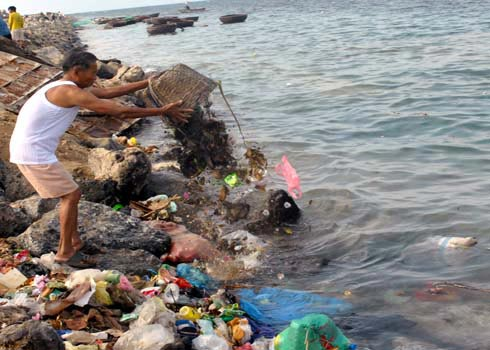
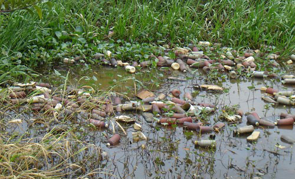
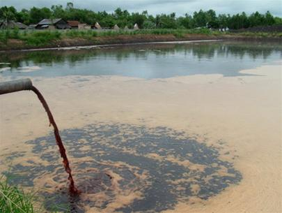
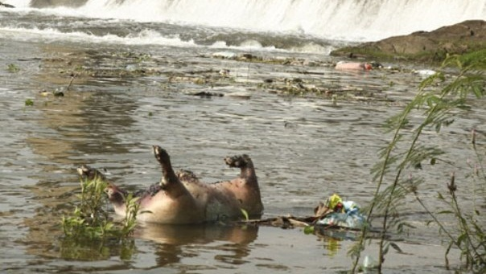

Water - Esential platform of life.
Reason of water pollution.
By human.
Every day, a large amount of domestic waste from residential areas, factories ... contains waste in daily life and sanitation of people. discharged into the environment without treatment.
The basic component of domestic wastewater is biodegradable organic substances. The population is growing, the problem of waste discharge and domestic wastewater are difficult to control in the cities. These diseases are therefore conditionally spread, causing environmental pollution.
Human throw garbage into the sea.
People are using wasteful clean water.
Due to agricultural production.
Agricultural activities such as animal husbandry and other agricultural activities all use a lot of water after polluting to pollute. Pesticides, fertilizers from rice fields, melons, gardens and vegetables contain toxic chemicals, which can pollute groundwater and surface water. During agricultural production, the majority of farmers used pesticides three times the recommended dosage. Not only that, farmers also use the banned pesticides such as Thiodol, Monitor ... In the process of fertilizing, spraying, farmers do not equip labor protection devices.
The widespread use of chemical fertilizers and plant protection chemicals in agriculture has also affected water resources. The amount of residual chemicals will seep into the aquifers, affecting the amount of water.
Most farmers do not have storage warehouses for storing medicines and medicines when they are not used, they are stored everywhere, including near cafeterias and daily-life water sources. Most pesticide bottles are finished after being discarded to the banks of the field, and the remaining is collected to sell scrap.
Pesticides contaminate water sources.
By industrial activities.
Due to the increasing rate of urbanization and industrialization leading to the establishment of industrial parks, the amount of waste and wastewater from industrial parks is increasing. Sadly, there are many companies and private facilities that ignore waste treatment, discharge waste directly into the water environment, seriously destroying the water environment.
The company discharges into the water environment.
Anyway, the biggest cause is human.
Natural cause.
Any phenomenon which reduces the quality of water, is the cause of water pollution.
Due to the waste of living organisms, not to mention their corpses. Plants and organisms die, they are decomposed by microorganisms into organic matter. A part of it will be absorbed into the ground, then it will seep into the groundwater and cause pollution, dead animals floating on rivers, streams ... polluting surface water ...
Dead animals floating on rivers.
Water pollution due to rain, melting snow, floods... Flooding can cause water to lose its freshness, stirring up dirt, debris in drains, carrying many hazardous wastes from landfills and taking away previously stored chemicals. Prolonged floods may be more polluted by chemicals used in agriculture, industrial wastes, chemical pollution ... Pollution of water sources due to natural factors (volcanoes, storms, floods) , erosion ...) can be very serious.
The decrease in water quality may be due to the geological characteristics of the water source, for example, water on acid sulfate soil often contains a lot of iron, aluminum, groundwater often contains a lot of calcium ...